北宋 張擇端《清明上河圖》Zhang Zeduan, "Along the River During the Qingming Festival"
挑夫 porters
船夫 boatmen
商人 merchants
說書人 storytellers
第五課時 Lesson 5
宋朝社會經濟與發展
The Song Dynasty's Social Economy and Development
學習目標 Learning Goals
一、經濟重心為什麼南移？Why did the economic centre shift south?
分析宋代經濟重心南移的原因Analyse the causes of the southward shift
二、宋代經濟有多繁榮？How prosperous was the Song economy?
農業、手工業的發展，商業的繁榮Agriculture, handicrafts and trade
經濟重心南移 The Southward Shift of the Economic Centre
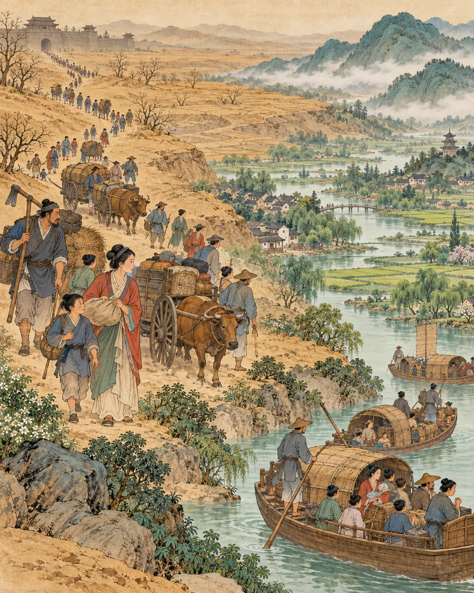
北方人口南遷 Migration from north to south
黃河流域 ➜ 長江流域Yellow River valley ➜ Yangtze River valley
兩漢Han
經濟重心在北方Centre in the north
魏晉南北朝Wei–Jin, N. & S.
江南得到開發The south is developed
唐朝中期Mid-Tang
開始南移Shift begins
南宋Southern Song
完成南移Shift complete
⚔️ 政治Political
南方戰亂少，社會安定Fewer wars, more stability
👨🌾 經濟Economic
北方人口南遷，帶來勞動力和技術Migrants bring labour and skills
🌧️ 自然Natural
氣候溫暖，雨水充足Warm and rainy
三個原因 Three reasons
城市與商業 Cities and Trade
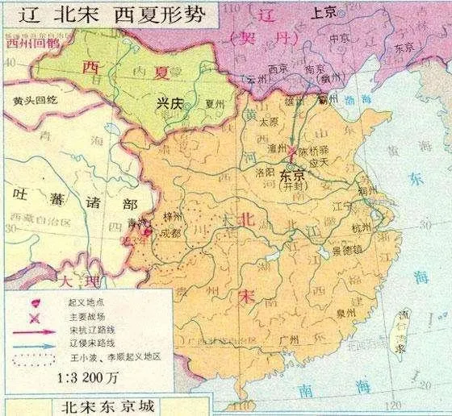
北宋：東京開封Northern Song: Dongjing (Kaifeng)
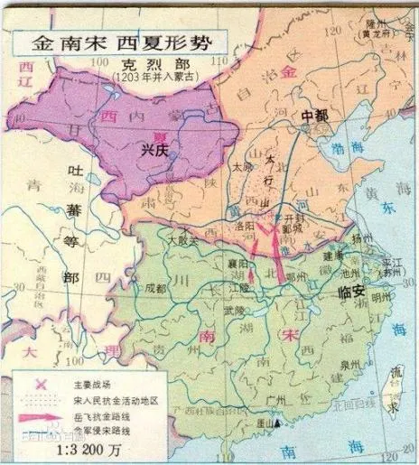
南宋：臨安（今杭州）Southern Song: Lin'an (Hangzhou)
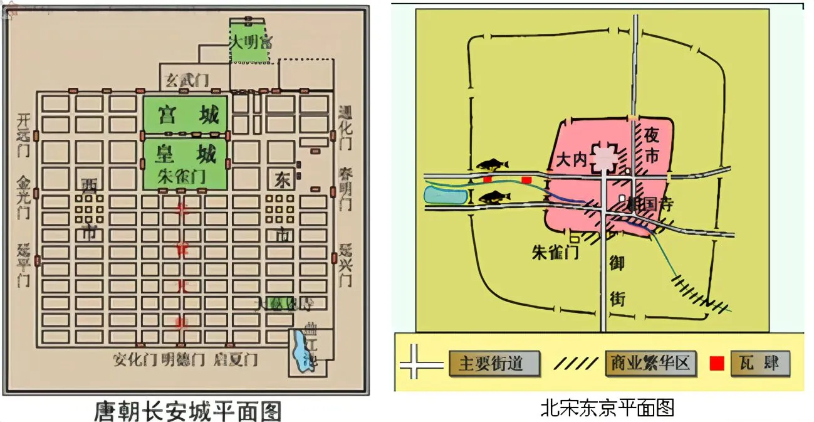
唐長安（坊市分開）與北宋東京Tang Chang'an (walled wards) and Song Dongjing
唐朝Tang
坊、市分開Homes and markets apart
晚上關門Closed at night
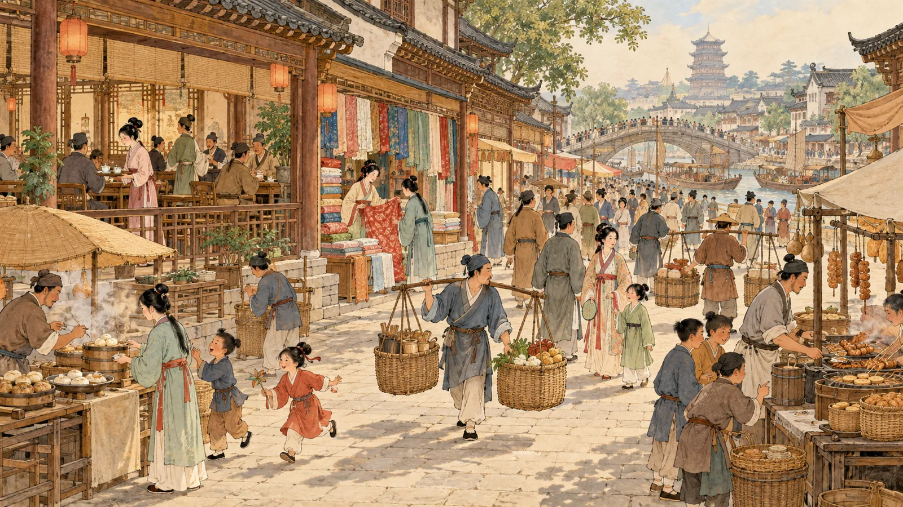
宋代街市A Song street market
宋朝：打破限制Song: limits broken
🏮 大街小巷都能開店Shops on any street
🌅 早市 🌙 夜市Morning and night markets
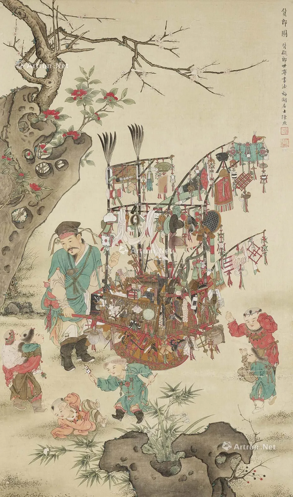
草市Grass markets
城市商業帶動鄉村，交通方便處形成新的小市場City trade spread to the countryside, creating small new markets
農業：老張種什麼？ Agriculture: What Will Old Zhang Plant?
人物檔案 Profile
姓名：老張 Name: Old Zhang
時代：宋朝 Era: Song Dynasty
身份：農民 Job: Farmer
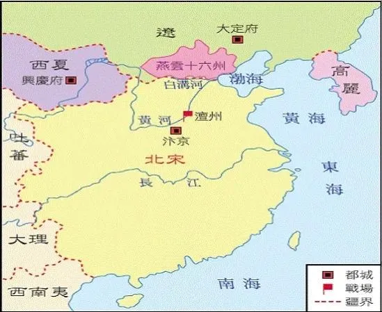
澶州 ➜ 南方From Chanzhou to the south
南方安全，上南方去！The south is safe. Let's go!
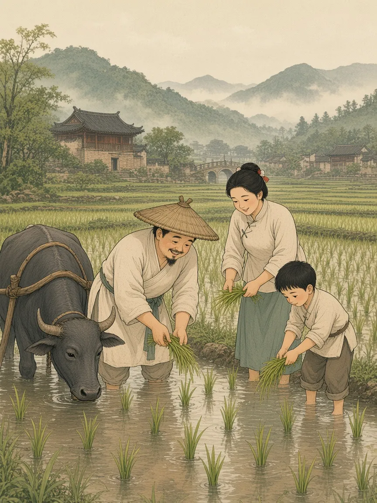
春天插秧Planting rice in spring
占城稻Champa rice
占城稻Champa rice
🇻🇳 越南一帶傳入From the Vietnam area
⏱ 成熟早Ripens early
☀️ 耐旱Drought-resistant
| 嶺南收成
Harvests in the far south | 遇到乾旱
In a drought |
|---|
占城稻
Champa rice | 一年兩收
twice a year | 仍有收成
still a harvest |
|---|
普通水稻
Ordinary rice | 一年一收
once a year | 嚴重減產
crop fails |
|---|
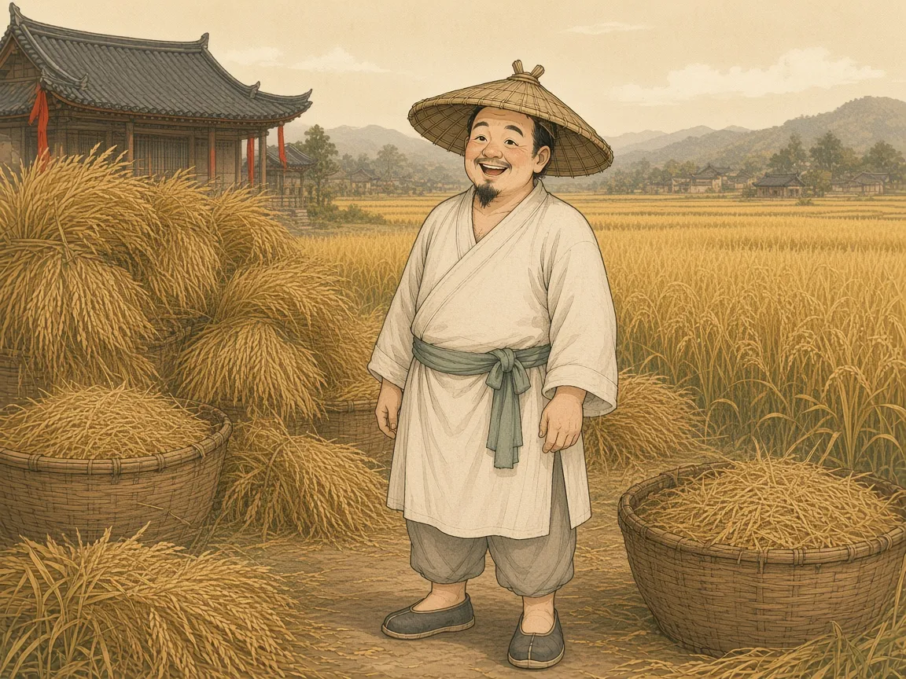
大豐收！A bumper harvest!
🌾 ➜ 蘇州糧倉To the Suzhou granaries
賣給國家Sold to the state
蘇湖熟，天下足
"When Suzhou and Huzhou ripen, the whole land has enough."
南方糧食產量超過北方 Southern grain output exceeds the north's
經濟作物與紡織 Cash Crops and Textiles
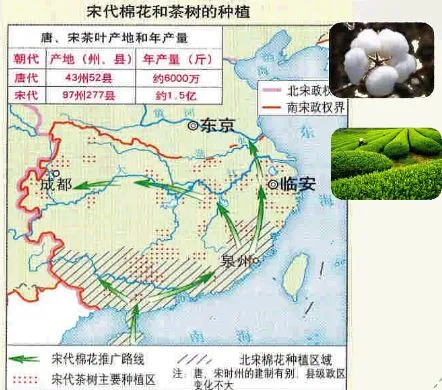
宋代棉花和茶樹的種植Cotton and tea in the Song
棉花 ⬆️Cotton spreads north
由南向北推廣到江淮、川蜀From the south to the Yangtze–Huai and Sichuan
我們忙時耕作，閒時經商，賺的錢越來越多！We farm when busy and trade in our spare time, earning more and more!
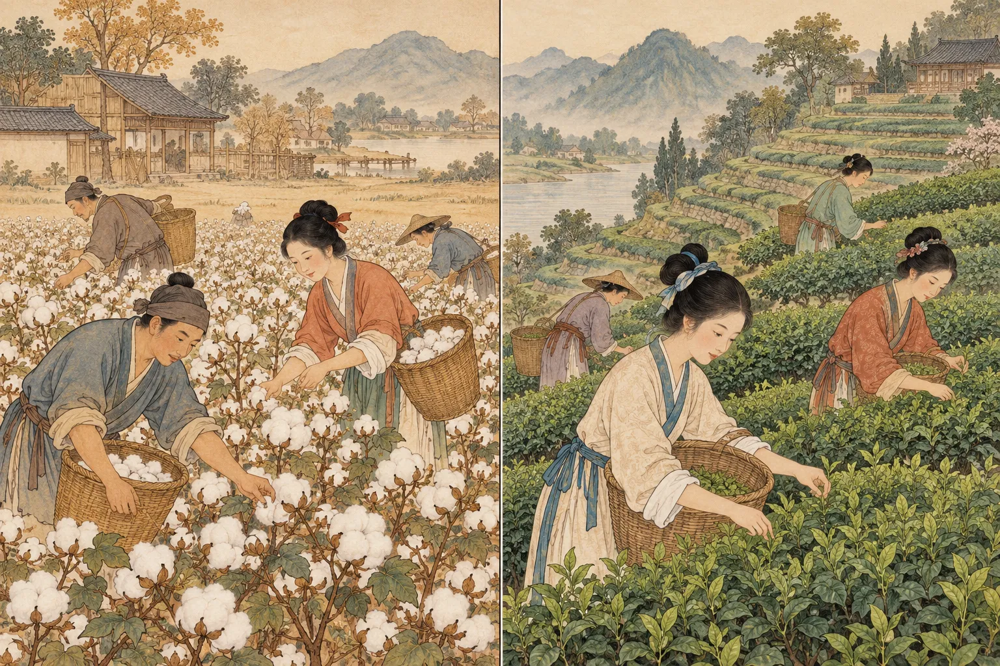
種棉花、採茶葉Picking cotton and tea
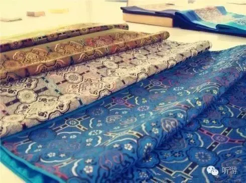
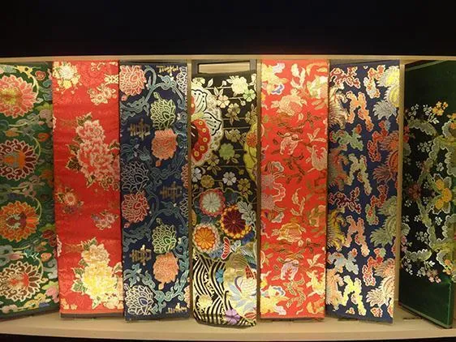
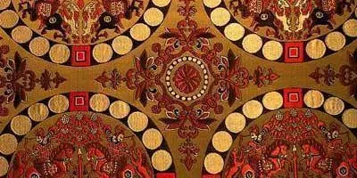
宋錦 · 雲錦 · 壯錦 · 蜀錦Famous Song-era brocades. Southern silk surpassed the north.
棉布成為衣著原料
Cotton cloth became a main clothing material
南宋後期 · 海南島棉紡織 Late Southern Song · Hainan cotton weaving
手工業：製瓷與造船 Handicrafts: Porcelain and Shipbuilding
大兒子學什麼手藝好呢？Which craft should my eldest son learn?
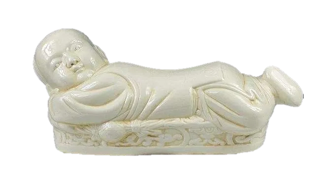
定窯娃娃枕Ding ware pillow
汝窯水仙盆Ru ware basin
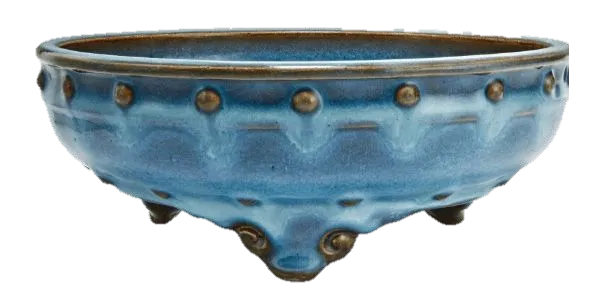
鈞窯花盆Jun ware flowerpot
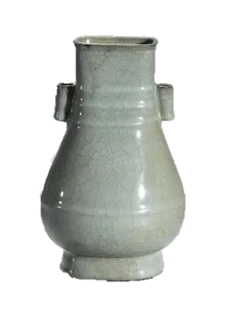
官窯貫耳瓶Guan ware vase
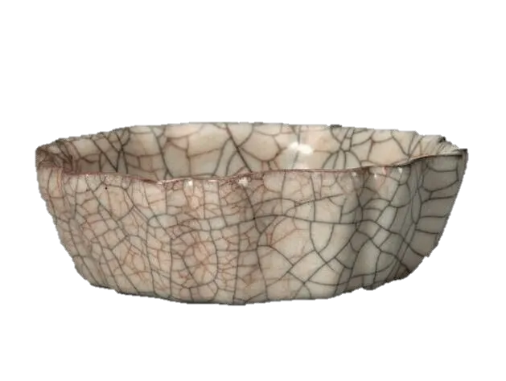
哥窯葵花式洗Ge ware washer
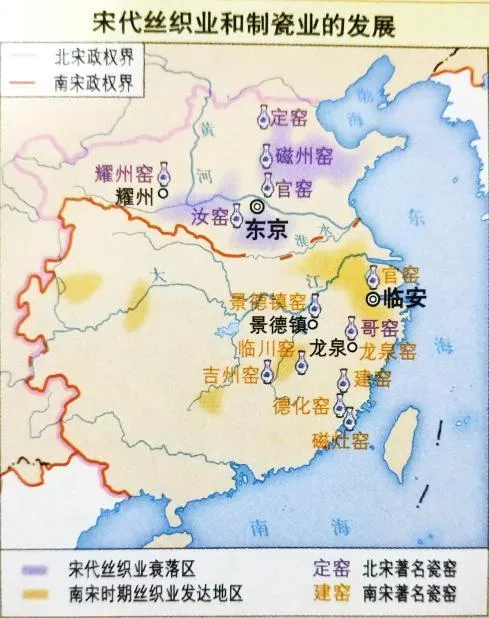
製瓷中心Porcelain centres
北宋：江西景德鎮Northern Song: Jingdezhen, Jiangxi
南宋：江南地區Southern Song: the Jiangnan region
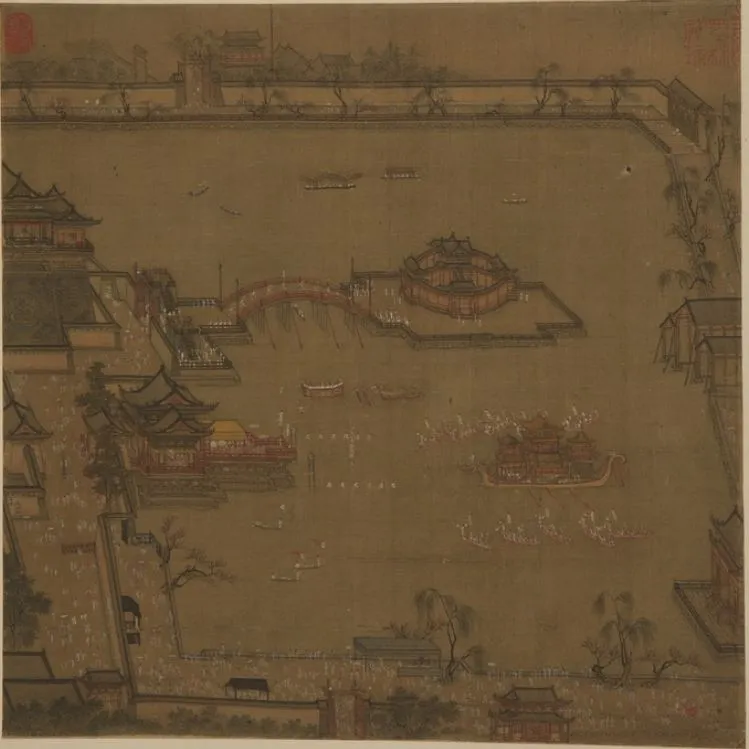
《金明池爭標圖》Dragon Boat Race on Jinming Lake
⚓ 廣州 · 泉州 · 明州Guangzhou · Quanzhou · Mingzhou
北宋東京郊外：世界現存最早的船塢Near Dongjing: the world's earliest known dry dock
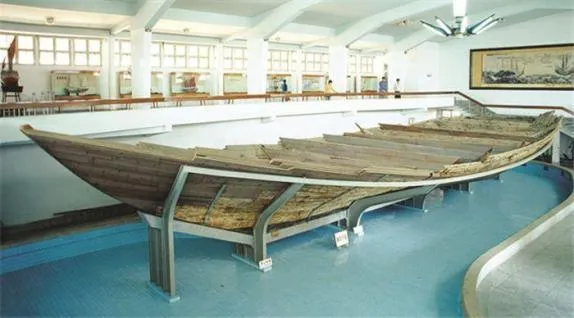
泉州出土的宋代海船Song ship excavated at Quanzhou
📏 長 24.2 米 24.2 m long
🚪 13 個船艙 13 cabins
⚖️ 載重約 200 噸 about 200 tonnes
🌿 香料木 4700 多斤 over 2,300 kg of fragrant wood
海外貿易 Overseas Trade
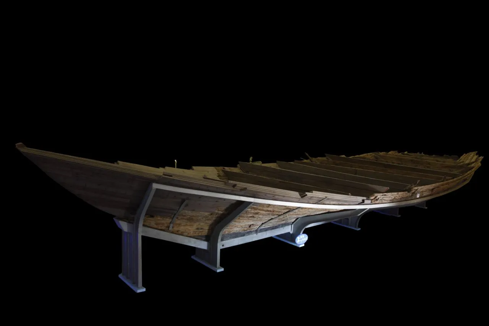
宋代海船模型Model of a Song ocean ship
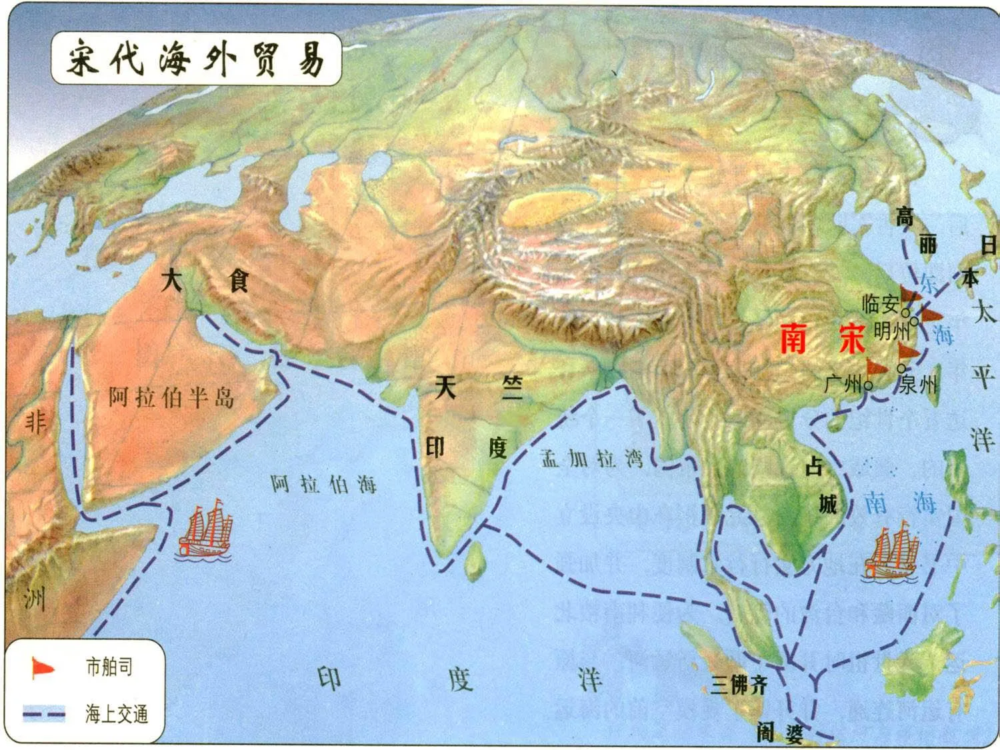
⬅️ 阿拉伯半島、非洲東海岸Arabia, East Africa
➡️ 朝鮮、日本Korea, Japan
⚓ 廣州、泉州Guangzhou, Quanzhou
市舶司
專門管理海上對外貿易 ≈ 今天的海關The Maritime Trade Office: like customs today
① 造船業發達Advanced shipbuilding
② 有聞名世界的大商港World-famous ports
③ 政府鼓勵海外貿易Government support
④ 陸路不便，更靠海路Land routes blocked; the sea mattered more
進城：夜市與交子 Into the City: Night Markets and Jiaozi
去東京（開封）旅遊吧！Let's visit Dongjing (Kaifeng)!
這麼晚了，還能吃飯嗎？It's so late. Can we still eat?
「夜市直至三更盡，才五更又復開張。」"The night market ran till midnight, and opened again before dawn."
—— 孟元老《東京夢華錄》Meng Yuanlao, Dreams of Splendour of the Eastern Capital
一匹羅 = 20000 文One bolt of silk = 20,000 coins
1 貫 = 1000 文 ≈ 6.5 斤1,000 iron coins weigh about 3 kg
20 貫 = 130 斤！About 65 kg!
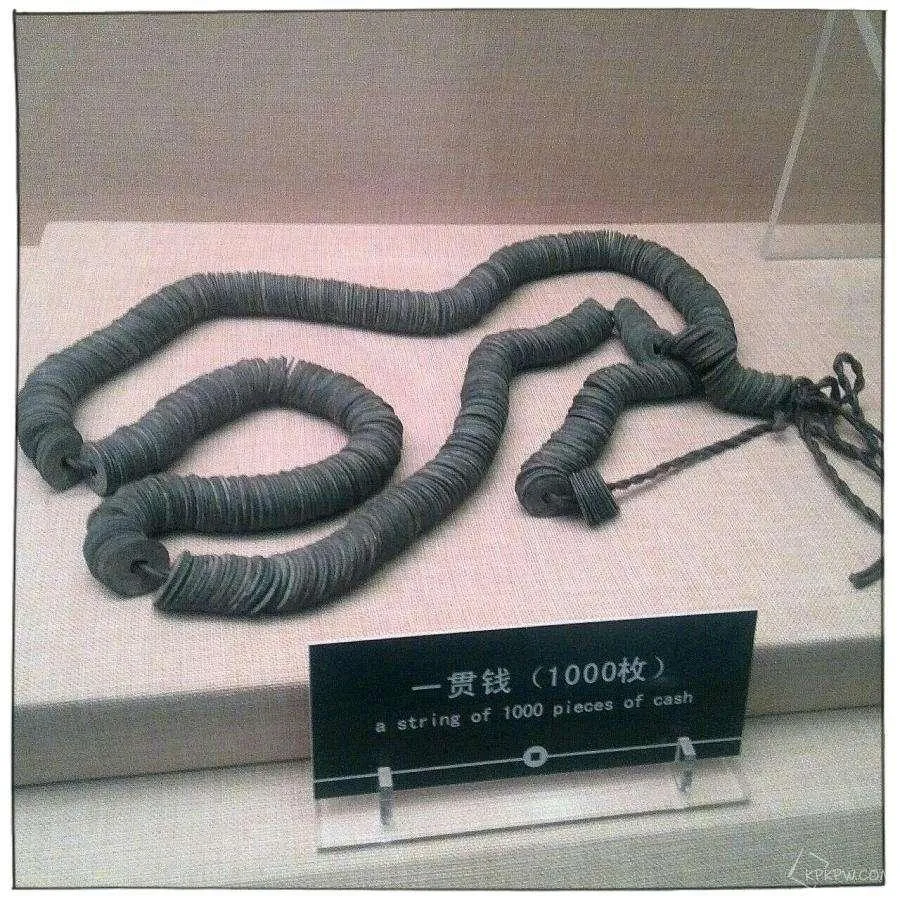
一貫錢（1000 文）A string of 1,000 coins
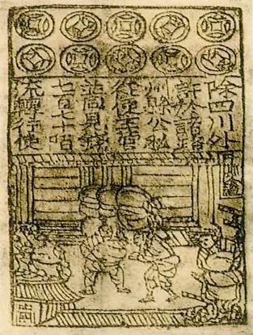
北宋交子Northern Song jiaozi
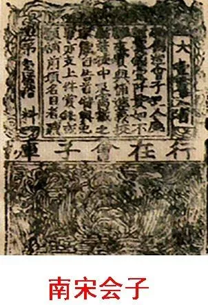
南宋會子Southern Song huizi
世界上最早的紙幣The world's earliest paper money
北宋 · 四川Northern Song · Sichuan
輕便好帶 · 成本低Light and cheap to make
本課小結 Summary
🌾 農業的發展Agriculture grew
🏺 手工業的興盛Handicrafts flourished
⛵ 商業貿易繁榮Trade boomed
➜
南宋時期
經濟重心南移完成The shift south was complete in the Southern Song
第一關 · 重心南移排排看Level 1 · Put the Shift in Order
點一張卡片，再點正確的朝代（也可以拖過去）Tap a card, then tap the right period (or drag it)
第二關 · 手藝地圖配對Level 2 · Match the Crafts to the Map
把每一門手藝送回它的家鄉Send each craft back to its home
最後一關 · 總複習小測驗Final Level · Review Quiz
🏆
老張生活指數 Old Zhang's life score
總複習小測驗 Review quiz
老張生活指數 ⭐ 0/6 Life score
幫老張做決定 · Help Old Zhang decide
宋朝社會經濟與發展The Song Dynasty's Social Economy and Development
← → 翻頁 · 空格 暫停 · F 全屏 Arrow keys to skip · Space to pause · F for fullscreen